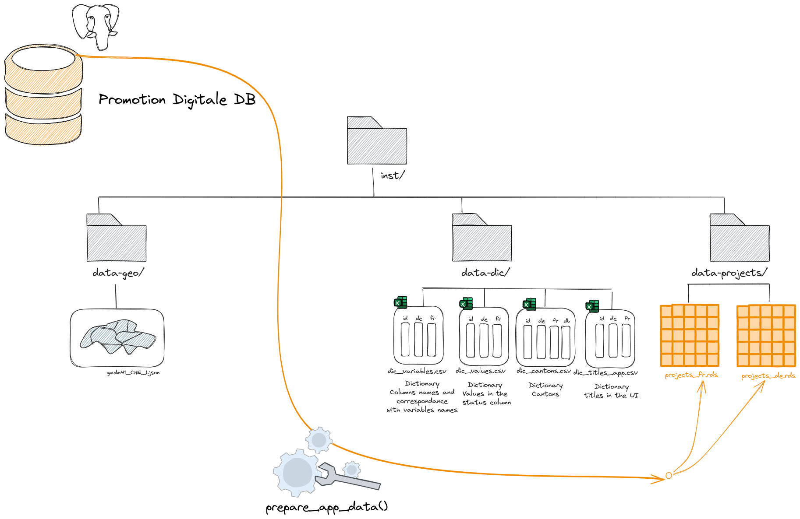

prepare-update-data-used-by-the-app.Rmd
library(exploratorium)The aim of this article is to show you how to update the data used by the app.
The projects data preparation workflow is shown below.
This data preparation process must be repeated each time the raw data is modified or each time a modification is required to the data dictionaries.

The final output of this pipeline consists in two datasets:
projects_fr.rdsprojects_de.rdswhich are used directly within the app.
You must upload the new version of the file PGV.xlsx in
the inst/data-projects-raw folder.
You must modify directly the dictionaries used for the translations.
Dictionnaries used during data preparation are .csv
files located in inst/data-dic folder:
dic_variables.csvdic_cantons.csvdic_values.csv